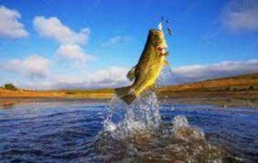

Para que seu arremesso seja preciso e você obtenha sucesso na pescaria você tem que segurar a vara de pesca do jeito certo. Para isso, posicione o polegar em linha reta no equipamento. Caso seja uma vara para molinetes, posicione o dedo médio atrás da haste do molinete e mindinho e anular na frente do mesmo. Feito isso, com o dedo indicador você controla a linha.
Uma das dicas de como usar a vara de pesca corretamente é se atentar para o ângulo do braço que está segurando o equipamento.
Esse passo é importante não só para garantir uma pesca bem sucedida como também para evitar dores durante o arremesso e o restante da realização da atividade.
Cuidados na hora de arremessar
Mais um dos cuidados ao usar a vara de pescar diz respeito ao momento do arremesso. Ao usar o equipamento, atente-se para não arremessar com o carretel encolhido mesmo que parcialmente, isso porque como a linha sai em espiral, nesse caso, pode causar atrito com as laterais e alça de forma a diminuir o desempenho do arremesso.
São iscas artificiais duros (hardbaits) feitos normalmente em plástico a imitar pequenos peixes e podem ser classificadas em iscas de superfície, sub-superfície ou meia-água.
São todas as iscas construídas com materiais flexíveis (softbaits), normalmente em silicone ou borracha (algumas delas são conhecidas por borrachinhas ou vinis) o que permite percorrer os fundos ao contrário das amostras (iscas) rígidas.
.clone()Na hora da puxada um dos cuidados ao usar a vara de pesca é medir a força. Assim que nota a fisgada de uma peixe, é comum sentir bastante euforia e acabar puxando com muita força até que ele venha para a superfície e chegue até você.